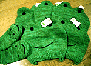

癒しのカエルサボテン！初回３体を発売！ 【福岡発=謎のカエルサボテン美少女様】一体一体ごとに気持ちを込めて彫りました。可愛がってやると、すごく喜びます。悩みがあるときは、そっとうちあけて下さい。相談にのってくれますよ
【福岡発=謎のカエルサボテン美少女様】一体一体ごとに気持ちを込めて彫りました。可愛がってやると、すごく喜びます。悩みがあるときは、そっとうちあけて下さい。相談にのってくれますよ

すすむてつろう画伯からカエル絵馬届く！【鹿児島発=すすむてつろう様】かえるのイラストはめったに描きませんが「ど根性ガエル」ピョン吉、中国に現れるのテーマで描きました。
【全国かえる奉賛会】すすむてつろう画伯は、電脳空間で異彩を放っている著名なインターネット画伯なのですが、カエル新聞のために、ピョン吉３匹を描いてくれました。ここでは小さなサイズでしか見れないので、作品に興味がある人は、画伯のページに行ってみましょー。
演歌に合わせてカエル合唱！某国策放送局が熱烈カエル報道！【日本発=kei-f同志記者】３月７日のNHK「ニュース７」で演歌に合わせて鳴く、というカエルの話題が放送されました。群馬県大間々町の小平の里の湿性植物園にいるヤマアカガエルが管理人さんの自作の演歌『昭和の未来』などを聞かせると、まるで合わせたように鳴くのです!!!音楽が始まると、ほほをぷっくりとふくらまし、楽しそうに鳴いているでは、ありませんか!!!管理人さんも「自分の歌に合わせて歌ってくれるのは、うれしいなぁ。」というコメントを目を細めながらおっしゃっていました。 このニュースは素晴らしい内容とともにNHKのゴールデンタイムで流れたことも素晴らしいと思いました。きっとNHKにはカエラーがいるに違いないです。はい。 その後、直接小平の里に取材してみました。関係者の話しによると『自分が作詞されて他の方に曲を付けていただいた歌をカセットで流していたところ…なんと!カエルたちがそのカセットに寄ってきた』のだそうです。 『ヤマアカガエルの産卵の時期で、その際の鳴き声に演歌の旋律が、似ているのではないか』とのことでした。（群馬県大間々町観光課の方のお話） 【全国かえる奉賛会】このところ、行政を動かしてカエルトンネルを建設するなど、北関東の人々のカエルに対する暖かい話題に触れて、感涙することが多いこのごろである。全国かえる奉賛会としても、大間々町を大いに祝福したいものだあ。ただちにメールを出すぞーっ！ ケロちゃんグッズ買い支えよう！ 【福岡発=げこげこ大王直筆】カエルグッズの老舗『マザーグーズの森』は、カエルのキャラクターのケロちゃんを主力キャラにしている。大王様は、某ショップで、ケロチャン帽子、ケロチャン手袋、ケロチャンマフラーなどが、激安で売りさばかれているのを目撃。ただちにカエラー多数を、現場に急行させ、大王様だけで、ケロちゃん帽子５、ケロチャン手袋１を総額２３００円で買いあさったのである。定価が２０００円くらいだったのが、この価格まで暴落しているとは。うれしいというよりも、ケロチャンが売れ行き不振なのであろうかと心配になってくる。 そこで、大王は、カエル市場に介入することを決め、２３００円もの資金を投入して、ケロチャングッズを買い支えて、カエル関連製品の暴落をくい止めようとしている。全国のカエラーも、『マザーグーズの森』製品が、アヒルとかに傾斜しないように、ケロチャングッズを断固として支持しようではないかああああ。
カエル本の画像付き情報を募集！ 【福岡発=ぴのこ同志記者】カエルな本は、世の中全体から見れば、需要が少ないので、出版されても知らないウチに絶版になっていたりします。インターネット上に、カエル書籍を集中的に扱うバーチャル書店を作ってしまうことにしました。みんなが知っているカエルをテーマにした本を教えて下さい。ある書店と契約して希望のカエル本を、に配達してくれるよう準備中です。
【福岡発=ぴのこ同志記者】カエルな本は、世の中全体から見れば、需要が少ないので、出版されても知らないウチに絶版になっていたりします。インターネット上に、カエル書籍を集中的に扱うバーチャル書店を作ってしまうことにしました。みんなが知っているカエルをテーマにした本を教えて下さい。ある書店と契約して希望のカエル本を、に配達してくれるよう準備中です。
日銀クイズにカエルキャラ登場！【福岡発=しげやん同志記者】ついに日銀にまで進出です。で、クイズに答えてホワイトボードをゲットしたいです。訪問９９９９９人目に記念品贈呈！【全国かえる奉賛会】９９９９９人目の訪問者に、記念品を贈呈するぞー。該当者は、大王様へのメールwakuro-3@hf.rim.or.jpで自己申告してくれー。福岡かえる展２のＭＬを開設！【福岡かえる展２事務局】福岡かえる展２の実行委員会用のメーリングリストを開設しました。公式ホームページの他に、実行委員会メンバーが情報交換する場所です。もちろん最新の情報は、昨年同様に、できるかぎりすべて、公式ホームページで公開します。メーリングリストで、その準備段階から体験したいというカエラーは、参加していただいてかまいません！参加申し込みは、ここからも自分でできるからねーっ！ 投稿採用者に武功カエル徽章を授与！ |
かえる古新聞過去に取り上げた記事を見出し付きで一覧したい人は、ここをクリック◆創刊号を見る◆先週号を見る◆話題の号を見る◆かえる新聞の昔を読む
|
私も入っています。。全国かえる奉賛会
大王様に会うには、このバナーをクリック。ずっと奥に写真館があるぞ。全国かえる奉賛会に入会するには、自分のホームページのどこかに、下の部分を追加するとバナーがリンク付きで表示されるぞ。どんどん入会しましょー |


|
 【全国かえる奉賛会】平成１１年カエル展の会場で衝撃を引き起こした、謎のカエルサボテンの分譲を、やっと実現することができました。
【全国かえる奉賛会】平成１１年カエル展の会場で衝撃を引き起こした、謎のカエルサボテンの分譲を、やっと実現することができました。